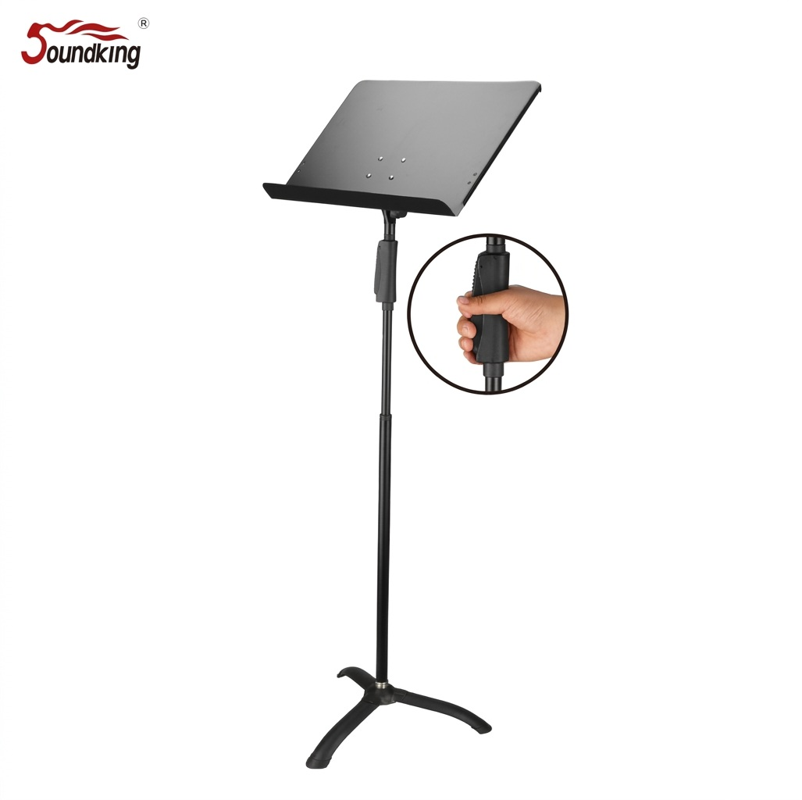

DF152-1은 푸시버튼(Push-Button) 원터치 방식의 한 손 높이 조절 보면대입니다. 양손이 자유롭지 않은 상황에서도 한 손만으로 높이를 빠르게 조절할 수 있도록 설계된 신제품 모델로, 345×475 mm의 넉넉한 플레이트와 880–1250 mm의 높이 조절 범위를 제공합니다.

한 손 푸시버튼 조작만으로 높이를 즉시 조절할 수 있는 신개념 보면대. 양손이 자유롭지 않은 연주자·지휘자·교사 환경에 최적화된 직관적 조작성을 제공합니다.
DF152-1은 제조사 Soundking 공식 카탈로그에서 "All-new push-button one-touch height-adjustable music stand"로 소개되는 신제품 보면대입니다. 메인 폴 중간의 푸시버튼을 한 손으로 누른 채 보면대를 위아래로 움직이면 높이가 조절되고, 버튼에서 손을 떼면 자동으로 고정되는 직관적인 원터치 구조입니다.
악기를 한 손에 들고 있는 연주자, 지휘봉을 든 지휘자, 학생을 지도하면서 자세를 바꾸는 교사 등 양손이 자유롭지 않은 환경에서 특히 유용합니다. 880–1250 mm의 실용 높이 범위와 345×475 mm의 넉넉한 플레이트는 일반 악보부터 중형 악보·바인더까지 안정적으로 지지합니다.
| 모델명 | DF152-1 |
|---|---|
| 타입 | Music Stand · One-Hand Push-Button |
| Height | 880 – 1250 mm |
| Panel Dimensions | 345 × 475 mm |
| Material | Steel & Plastic |
| Net Weight | 3 kg |
| 조작 방식 | Push-Button One-Touch (한 손 조작) |
| 권장소비자가 | 77,000 원 / 개 (VAT 포함) |
※ 본 사양은 제조사 Soundking 공식 카탈로그 DF152-1 등재 자료를 기준으로 정리되었습니다. 단가는 수입원(현대에이브이씨) 2026-01-01 스탠드 가격표 기준 권장소비자가(VAT 포함)입니다.